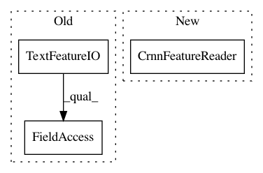

4eb5897b172b7157632e7bee83624646142740ae,tools/export_saved_model.py,,test_load_saved_model,#Any#Any#Any#,127
Before Change
prediction_val = sess.run(predictions, feed_dict={input_tensor: image})
codec = tf_io_pipline_tools.TextFeatureIO(
char_dict_path=char_dict_path,
ord_map_dict_path=ord_map_dict_path
).reader
prediction_val = codec.sparse_tensor_to_str(prediction_val)[0]
log.info("Predict image result ----> {:s}".format(prediction_val))
After Change
prediction_val = sess.run(predictions, feed_dict={input_tensor: image})
codec = tf_io_pipline_fast_tools.CrnnFeatureReader(
char_dict_path=char_dict_path,
ord_map_dict_path=ord_map_dict_path
)
prediction_val = codec.sparse_tensor_to_str(prediction_val)[0]
log.info("Predict image result ----> {:s}".format(prediction_val))
In pattern: SUPERPATTERN
Frequency: 3
Non-data size: 3
Instances
Project Name: MaybeShewill-CV/CRNN_Tensorflow
Commit Name: 4eb5897b172b7157632e7bee83624646142740ae
Time: 2019-03-22
Author: luoyao@baidu.com
File Name: tools/export_saved_model.py
Class Name:
Method Name: test_load_saved_model
Project Name: MaybeShewill-CV/CRNN_Tensorflow
Commit Name: 4eb5897b172b7157632e7bee83624646142740ae
Time: 2019-03-22
Author: luoyao@baidu.com
File Name: tools/evaluate_shadownet.py
Class Name:
Method Name: evaluate_shadownet
Project Name: MaybeShewill-CV/CRNN_Tensorflow
Commit Name: 4eb5897b172b7157632e7bee83624646142740ae
Time: 2019-03-22
Author: luoyao@baidu.com
File Name: tools/test_shadownet.py
Class Name:
Method Name: recognize